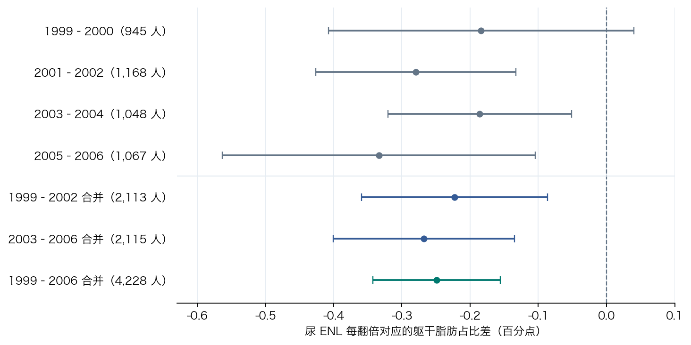
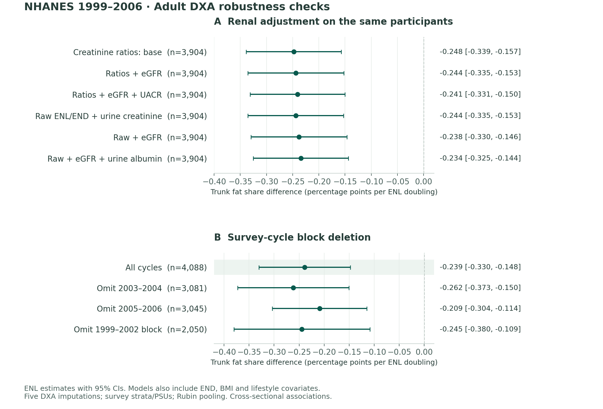
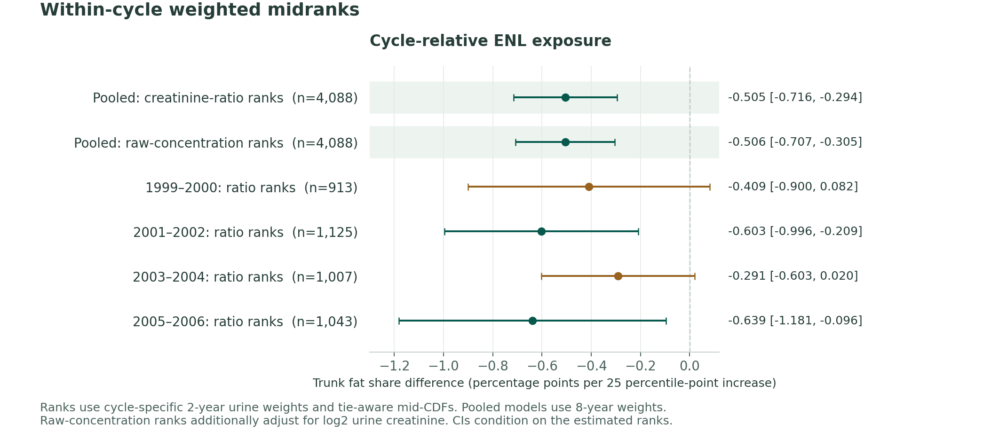
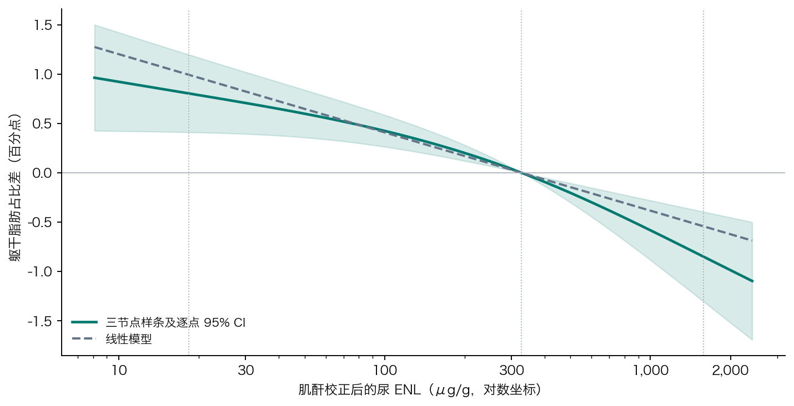
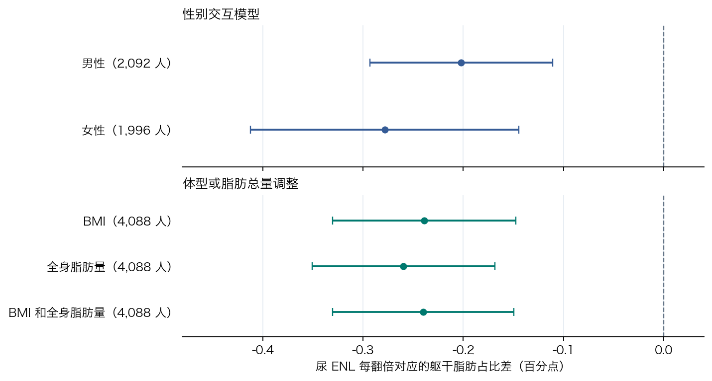

NHANES 机器学习试跑
六张图展示腰围、肥胖、HSI 和 CVD 的模型结果。
打开详细报告已完成的分析
查看成人 DXA 主结果、跨周期复核和其他结局。表格可下载核对。
1999–2006 年合并 4,228 人。尿 ENL 每翻倍，调整 BMI 后躯干脂肪占比平均低 0.249 个百分点（95% CI −0.343 至 −0.156）。
早期两期和原两期的估计均为负。单列肌酐和仅保留 DXA 未插补者时结果相近。
看跨周期、区域脂肪与腰围比较
在同一批 4,088 人中，同时加入膳食和活动后，躯干脂肪占比差由 −0.259 变为 −0.239 个百分点（95% CI −0.330 至 −0.148）。
看四期调整结果、森林图和变量映射最新完成 · NHANES 1999–2006

加入 eGFR、平方项和 UACR 后的估计。95% CI −0.331 至 −0.150；同样本调整前为 −0.248。
周期内每升高 25 个百分位的估计。95% CI −0.716 至 −0.294。此单位与每翻倍不同。
分别剔除 2003–2004、2005–2006 和 1999–2002 四年块。三种方案的 95% CI 均位于零以下，单位为百分点／ENL 每翻倍。

严格名称候选为 18/4,564 个食物代码。加权食品克数覆盖首日 1.153%、次日 1.414%；两个回顾日均无完整映射。所有候选仍未完成暴露计算所需的审核。
未匹配食物保持未知。3 个候选记录存在待核对的来源单位疑点；现有尿 ENL/END 与 CAP 周期不同，不能逐人联结。
NHANES 1999–2006 · 4,088 人

非线性证据有限，主模型继续用 ENL 每翻倍的线性估计。
男性和女性的躯干脂肪占比估计均为负，交互区间跨零。
尿 ENL 每翻倍的躯干脂肪占比差。95% CI −0.330 至 −0.149。

在同一批 2,050 人中，尿 ENL 每翻倍的估计由 −0.267 变为 −0.245 个百分点（95% CI −0.380 至 −0.109）。
同样本加入 BMI 后，腰围点估计由 −1.027 cm 变为 −0.161 cm。再调生活方式后，腰围区间跨零，躯干脂肪占比的估计仍为负。
查看 2,078 人的比较与森林图| 模块 | 读数 | 解读 |
|---|---|---|
| 腰围 | ENL 每翻倍，平均低 0.96 cm | 单暴露筛查。三个周期方向一致。 |
| 肥胖分类 | 2009–2010 验证集 AUC 0.626 → 0.653 | 逻辑回归加入 ENL/END 后的增量。基线为人口学特征和吸烟。 |
| 纤维与 CAP | 每 5 g/千 kcal 对应 −8.35 dB/m，块内 Q=0.046 | 重叠 NHANES 周期已有相同方向的论文。 |
| 既往复合 CVD 与认知 | 复合 CVD 的 ENL 区间跨 1；认知模型未过块内校正 | 按各自的数据和结局口径解读。 |
| 粪便菌群与 ENL | 双向 Spearman ρ 为 0.10 和 0.17 | 两方向加入菌属的增量区间均跨零。 |